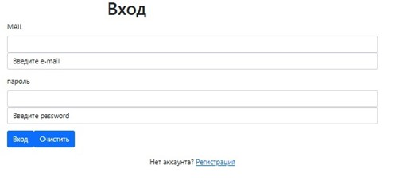
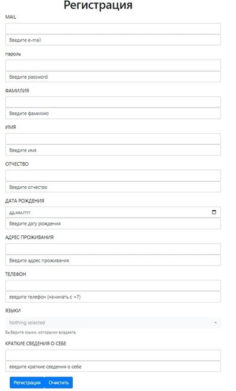
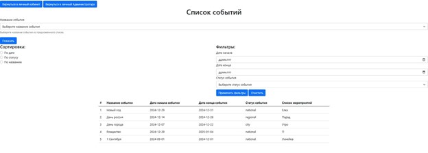
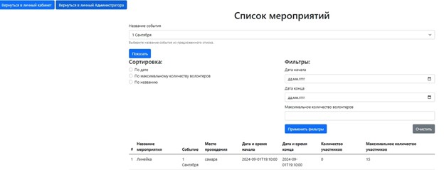
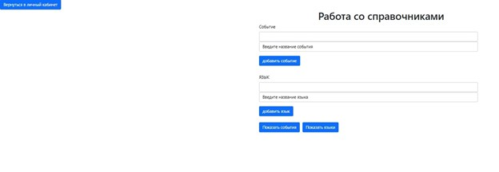
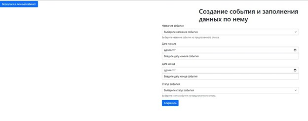
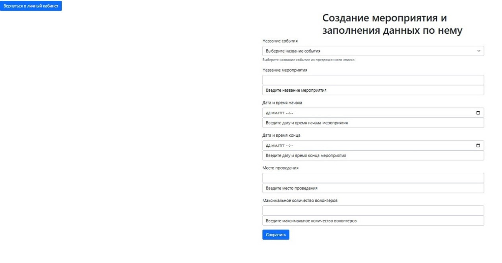

Разработанная система предназначена для автоматизации процесса организации мероприятий с участием волонтеров. В системе предусмотрено две роли: администратор и волонтер. В режиме администратора она позволяет пользователям создавать события и мероприятия, управлять заявками волонтеров, а в режиме волонтера предоставляет возможность регистрироваться, подавать заявки на участие и просматривать информацию о мероприятиях. Программа имеет клиент-серверную архитектуру и требует наличия подключения к сети Интернет.
Для пользователей установка не требуется. Работа ведётся через поддерживаемый веб-браузер.
Данная программная система имеет два режима работы: режим администратора и волонтера. При запуске программной системы появляется окно авторизации, представленное на рисунке А.1. В поля "MAIL" и "пароль" необходимо ввести данные зарегистрированного пользователя и нажать кнопку "Вход". Также можно нажать кнопку "Очистить", чтобы поля стали пустыми.
Если пользователь желает зарегистрироваться, ему необходимо нажать на "Регистрация", чтобы открыть страницу регистрации, представленное на рисунке А.2. В новой странице заполнить поля "MAIL", "пароль", "ФАМИЛИЯ", "ИМЯ", "ОТЧЕСТВО", "ДАТА РОЖДЕНИЯ", "АДРЕС ПРОЖИВАНИЯ", "ТЕЛЕФОН", "ЯЗЫКИ", "КРАТКИЕ СВЕДЕНИЯ О СЕБЕ", а затем нажать кнопку "Регистрация".
Если все поля заполнены верно, система определяет роль пользователя и открывает соответствующее окно, которое открывает доступ к определенным действиям в системе.
На рисунке A.4 приведена страница поиска, на которой представлен список событий в виде таблицы. На неё можно попасть, нажав на кнопку «Просмотр событий».
На рисунке A.5 представлена эта страница. Каждому мероприятию соответствует строка в этой таблице. Для каждого мероприятия отображена следующая информация: название мероприятия, название события, место проведения, дата и время начала и конца, количество подтвержденных участников, максимальное количество участников. Каждому мероприятию в соответствующей строке принадлежит кнопка «Подать заявку».
В каждой из двух страниц чтобы вернуться назад в личный кабинет нужно нажать на кнопку «Вернуться в личный кабинет».
На рисунке А.7 представлена страница работы со справочниками в режиме администратора.
Администратор после добавления в справочник события может заполнить данные по событию: название, дата начала, дата конца и статус события.
 